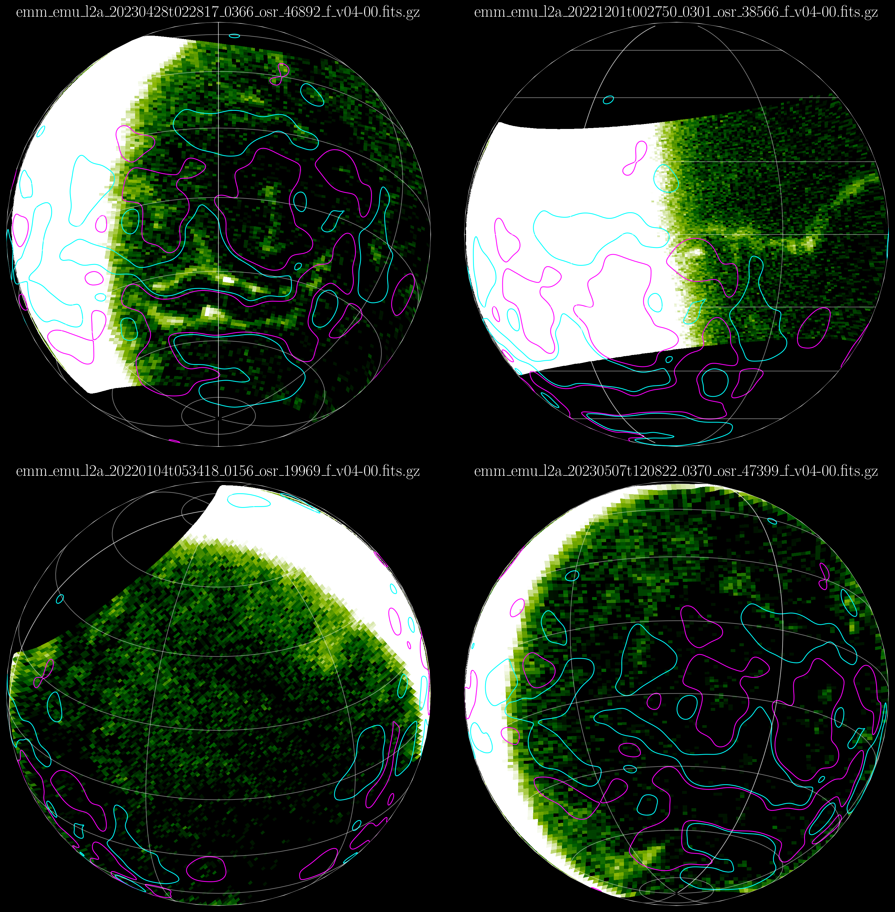

Hello! Welcome!! I am a Research Scientist at the Laboratory for Atmospheric and Space Physics (LASP), University of Colorado Boulder. My research focuses on the upper atmospheres, ionospheres, and exospheres of planets, with a particular interest in Mars, its atmospheric escape, and evolution. I am also greatly interested in heliophysics and space weather. In my leisure time, I enjoy outdoors, traveling, tennis, and biking. My pronouns are he/him/his.
Education
- Ph.D. Physics, Cochin University of Science and Technology, July 2021
- M.Sc. Physics, National Institute of Technology Calicut, May 2015
- B.Sc. Physics, University of Calicut, May 2013
Research and Teaching Experience
- Research Scientist, Laboratory for Atmospheric and Space Physics, University of Colorado Boulder, May 2021 - present
- Visiting Researcher, Space and Planetary Science Center, Khalifa University, May 2021 - present
- Visiting Scholar, Space Sciences Laboratory, University of California, Berkeley, May 2021 - December 2023
- Research Fellow, Space Physics Laboratory, Vikram Sarabhai Space Centre, Indian Space Research Organisation, June 2016 - April 2021
- Teaching Assistant, Indian Institute of Technology Palakkad, July 2015 - June 2016
- Visiting Student, Raman Research Institute, January 2015 - June 2015
- Summer Student, Indian Institute of Technology Madras, May 2014 - July 2014

Martian nightside aurora images from EMM/EMUS